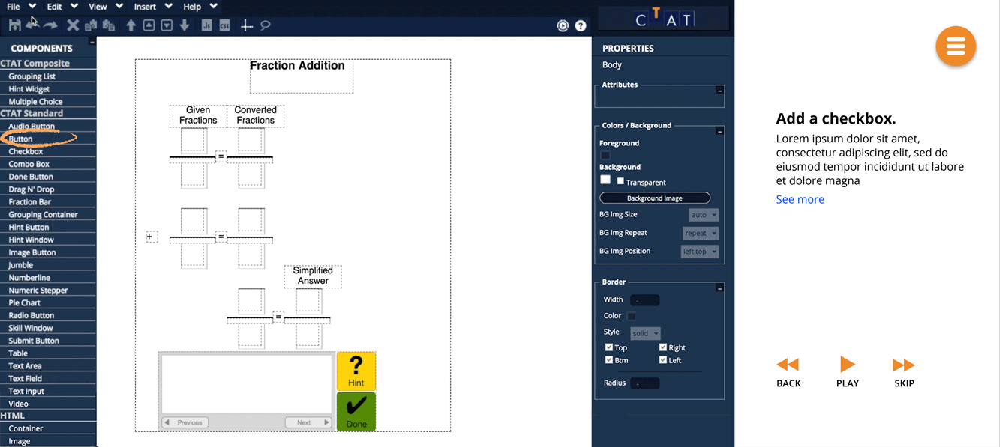
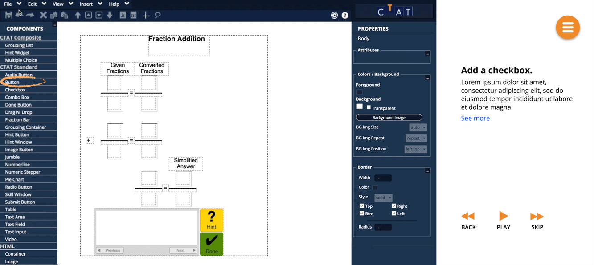

CTAT Redesign
Challenge
Help our clients increase the adoption of CTAT, a tool suite for creating online cognitive tutors, among instructional designers in higher education settings.
Outcome
The redesign, testing and partial build of a new website and tutorials for CTAT. A full research report that can be viewed here.
Role & Contributions
- Lead designer
- User research
- Prototyping
- Design documentation
Teammates
- Grace Guo
- Chris Feng
- Siting Jin
Overview
What is CTAT?
The Cognitive Tutor Authoring Tools (CTAT) is a tool suite for creating online intelligent tutors. CTAT allows instructors to easily design problem interfaces and use something called behavior graphs, which are based on cognitive models, to provide feedback based on students' actions.

Redesign Components
We designed a new website, a tutorial gallery and a series of tutorials intended for novice or inexperienced users of CTAT. The website aims to make the CTAT software more approachable and appealing to new users. We focused on making clear what cognitive tutors are upfront, which we saw greatly increased user interest to see more. The latest iteration of our site is hosted here (not fully styled).
The tutorial gallery allows new users to see and interact with cognitive tutors made with CTAT, demonstrating what they can do. The tutorials are designed to onboard users step-by-step to build their own tutors.

Research
Key Findings
We started by identifying major barriers to adoption for technologies like CTAT. We saw that although CTAT is an extremely powerful tool, much of its potential remains undiscovered by novice users for several reasons:
- Users misunderstand CTAT’s capabilities. To some novice users, CTAT seems overly complicated; it's hard to grasp that it's useful for providing help on more complex problems.
- CTAT incurs too high of a cognitive load. Users feel that CTAT requires too much time for staff and students to learn, and adds yet another tool to keep track of.
- There is insufficient support for novice users. The lack of comprehensive online documentation and Q&A platforms creates a substantial barrier for users trying to troubleshoot.
It's not that other tools are better than CTAT, but what are you trying to do? For the types of problems some professors use, CTAT is too much. They won't take time to learn it.
Iterations & Testing
Design Goals
We categorized the main points from our initial research into three phases of use, deriving our starting set of design goals:
- To help users understand the value of CTAT (pre-use)
- To redesign tutorials for better onboarding (initial use)
- To make the user interface for creating tutors more intuitive (regular use)

Lo-Fi Prototype
We chose to focus on creating effective tutorials. In our research with novice users, we noticed that sufficient understanding of CTAT increased curiosity about what intelligent tutors could do. We suspected that tutorials were an opportunity to provide that understanding.
We conducted think alouds to test two tutorial formats: 1) text-based instructions with screenshots, and 2) video with voiceover instructions.


Mid-Fi Prototype
We found that there were advantages and disadvantages to each format. Text provided better explanations, but video was easier to follow. In the mid-fi stage, we worked to find a good balance between the two formats for better learning and clarity.

Hi-Fi Prototype
Compared to CTAT's current text-and-images based tutorial, our tutorial's step breakdown and more visual format felt more approachable to people. We organized the feedback we received to identify specific areas to improve.

In addition, we realized that the tutorial alone was not enough to educate users about CTAT. We wanted to build a website around the tutorials to provide more context for users first. The combined feedback led to the final iterations shown at the top.
The [tutorial] made me want to know more. If it only uses a few things to make something decent, I want to know what else it can do.
Other Iterations
Typography & Icons
Creating a visual system for the tutorials and website.


Highlighting Components
Exploring different ways to call out the current step.


Layout
Testing different layouts for ease of following tutorials.


 

Learning Outcomes
- Determining a design direction from open-ended research
- Balancing self-guided work and clients' acceptance criteria
- Practiced usability testing and iterative design
Reflection
Within our limited time frame, we were not able to fully test the effectiveness of our tutorial redesign on CTAT adoption. While our user testing has shown that the site redesign and the new tutorials made it easier for novice users to understand CTAT’s capabilities, there remains the possibility that this may not translate to increased adoption of CTAT over time.
Some possible next steps for this project might include:
- Deploying and evaluating the long-term effect of the new website and its features on CTAT adoption. A good indication of tutorial effectiveness could be a correlated upward trend between views and tutors created.
- Creating a greater range of tutorials. Users who are considering CTAT for its superior flexibility may want to learn how to use a wider range of features. Tutorials that can make more complex features more learnable would appeal to these users and help them create effective tutors for a diverse range of domains.